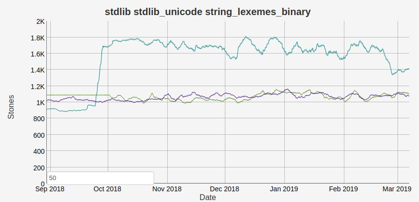
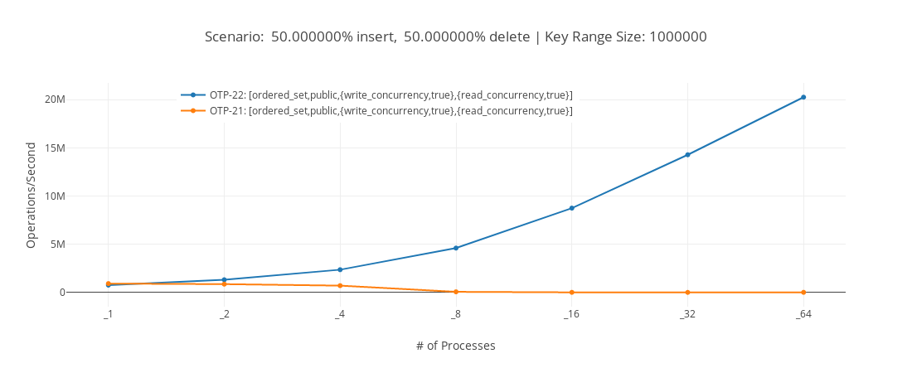
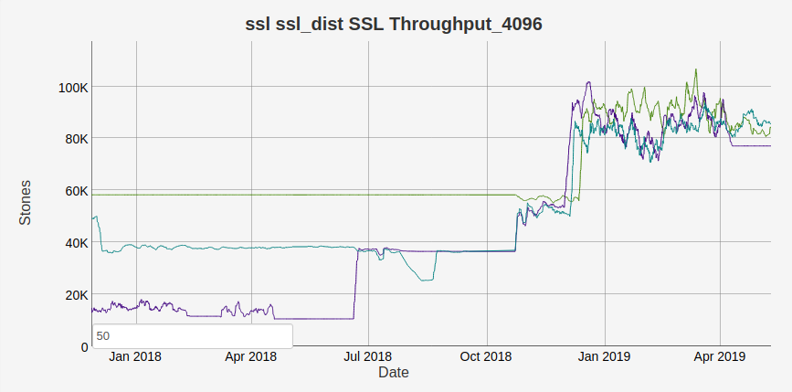
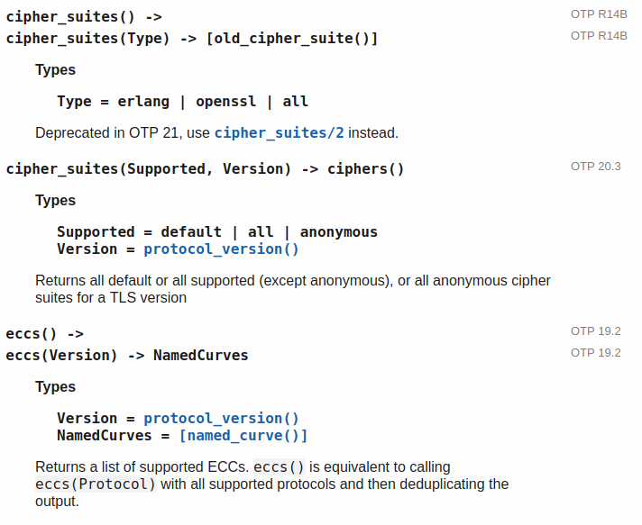

OTP 22 Highlights
OTP 22 has just been released. It has been a long process with three release candidates before the final release. We decided this year to try to get one month more testing of the major release and I think that the extra time has paid off. We’ve received many bug reports from the community about large and small bugs that our internal tests did not find.
This blog post will describe some highlights of what is released in OTP 22 and in OTP 21 maintenance patches.
You can download the readme describing the changes here: OTP 22 Readme. Or, as always, look at the release notes of the application you are interested in. For instance here: OTP 22 Erts Release Notes.
Compiler #
In OTP 22 we have completely re-implemented the lower levels of the Erlang compiler. Before this change the Erlang compiler consisted of a number of IRs (intermediate representations):
Erlang AST -> Core Erlang -> Kernel Erlang -> Beam Asm
When compiling an Erlang module, the code is optimized and transformed between
these different IRs. In OTP 22 we have almost removed the Kernel Erlang IR and
added a new IR called Beam SSA. There are a series of blog posts describing this
change in greater details for those that are interested.
With this change the compile pipeline now looks like this:
Erlang AST -> Core Erlang -> Kernel Erlang -> Beam SSA -> Beam Asm
Together with the SSA rewrite a number of new optimizations have been introduced. One such
is strengthening of the
bit syntax.
Before the change, you had to be very careful with how you wrote your binary matching in
order for the binary match context optimization to work properly. There were also scenarios
where it was impossible to get the optimization to trigger at all. One place in Erlang/OTP
where this had a great effect was the internal string:bin_search_inv_1 function used by string:lexemes/1
and other string functions. We can see the change in the benchmark graph below (where higher
is better and the turquoise line in the OTP 22 branch):

You can read more about this optimization in PR1958 and Retiring old performance pitfalls.
Another great optimization is PR2100 which makes the compiler’s type optimization pass work across functions within the same module. For instance in the code below:
-record(myrecord, {value}).
h(#myrecord{value=Val}) ->
#myrecord{value=Val+1}.
i(A) ->
#myrecord{value=V} = h(#myrecord{value=A}),
V.
The new compiler is able to detect the type of the term passed as an argument to
h/1 and also the return value of h/1 so it can eliminate the record checks
completely. Looking at the BEAM code (produced by erlc -S) of the h/1 function we get:
OTP 21:
{test,is_tagged_tuple,{f,9},[{x,0},2,{atom,myrecord}]}.
{get_tuple_element,{x,0},0,{x,1}}.
{get_tuple_element,{x,0},1,{x,2}}.
{gc_bif,'+',{f,0},3,[{x,2},{integer,1}],{x,0}}.
{test_heap,3,1}.
OTP 22:
{get_tuple_element,{x,0},1,{x,0}}.
{gc_bif,'+',{f,0},1,[{x,0},{integer,1}],{x,0}}.
{test_heap,3,1}.
The is_tagged_tuple instruction has been completely eliminated and as an added bonus
one get_tuple_element was also removed.
However, this is only the start and we are already looking into making even better optimizations for OTP 23, building on top of the SSA rewrite.
Socket #
OTP 22 comes with a new experimental socket API. The idea behind this API is to have a stable intermediary API that users can use to create features that are not part of the higher-level gen APIs. We will also be using this API to re-implement the higher-level gen APIs in OTP 23.
Another aspect of the new socket API is that it can be used to greatly reduce the overhead that is inherent with using ports. I wrote this microbenchmark called gen_tcp2 to see what the difference could be.
Erlang/OTP 22 [erts-10.4] [source] [64-bit]
Eshell V10.4 (abort with ^G)
1> gen_tcp2:run().
client server
gen_tcp: 12.4 ns/byte 12.4 ns/byte
gen_tcp2: 7.3 ns/byte 7.3 ns/byte
ratio: 58.9 % 58.9%
ok
The results seem promising. The socket implementation of gen_tcp uses roughly 40% less CPU to send the same amount of packets. Of course, gen_tcp does a lot more than gen_tcp2 (dealing with lots of buffers, error cases and IPv6 to name a new), so it is not by any means a fair comparison. Though if an application can live without all the guarantees that come with gen_tcp, then using socket could be very good for performance.
Write concurrency in ordered_sets #
PR1952 contributed by Kjell
Winblad from Uppsala University makes it possible to do updates in
parallel on ets tables of the type ordered_set. This together with
other improvements by Kjell Winblad and Sverker Eriksson
(PR1997 and
PR2190) has greatly
increased the scalability of such ets tables that are the base for
many applications, for instance,
pg2 and the default ssl session
cache.

In the benchmark above we can see that on an ordered_set table the
operations per seconds possible on a 64 core machine has increased
dramatically between OTP 21 and OTP 22. You can see a description of
the benchmark and the results of many more benchmarks
here.
The data structure used to enable write_concurrency in the
ordered_set is called contention adaptive search tree. In a
nutshell, the data structure keeps a shadow tree that represents the
locks needed to read or write a term in the tree. When conflicts
between multiple writers happen, the shadow tree is updated to have
more fine-grained locks for specific branches of the tree. You can
read more about the details of the algorithm in A Contention Adapting
Approach to Concurrent Ordered
Sets
(PDF).
TLS Improvements #
In OTP 21.3 the culmination of many optimizations in the ssl application was released. For certain use-cases, the overhead of a using TLS has been significantly reduced. For instance in this TLS distribution benchmark:

The bytes per second that the Erlang distribution over TLS is able to send has been increased from 17K to about 80K, so more than 4 times as much data as before. The throughput gain above is mostly due to better batching of distribution messages which makes it so that ssl does not have to add a lot of padding to each message sent. So it does not translate over to using ssl directly but is still a very nice performance improvement.
In OTP 22 the logging facility for ssl
has been greatly improved and there is now basic server support for TLSv1.3. In order to
work with TLSv1.3 you need to install an OpenSSL
version that supports TLSv1.3 (for instance 1.1.1b), compile Erlang/OTP using
that OpenSSL version and generate the correct certificates. Then we can start a TLSv1.3
server like this:
LOpts = [{certfile, "tls_server_cert.pem"},
{keyfile, "tls_server_key.pem"},
{versions, ['tlsv1.3']},
{log_level, debug}
],
{ok, LSock} = ssl:listen(8443, LOpts),
{ok, CSock} = ssl:transport_accept(LSock),
{ok, S} = ssl:handshake(CSock).
And use the OpenSSL client to connect:
openssl s_client -debug -connect localhost:8443 \
-CAfile tls_client_cacerts.pem \
-tls1_3 -groups P-256:X25519
This will produce a huge amount of logs, but somewhere in there we can see this in Erlang:
<<< TLS 1.3 Handshake, ClientHello
and this in OpenSSL:
New, TLSv1.3, Cipher is TLS_AES_256_GCM_SHA384
which means that we have successfully created a new TLSv1.3 connection. If you want to
duplicate what I’ve done you can follow
these instructions.
Not all features of TLSv1.3 have been implemented, you can see which parts of the RFCs
that are missing in the ssl application’s Standard Complience documentation.
Fragmented distribution messages #
In order to deal with the head of line blocking caused by sending very large messages over Erlang Distribution, we have added fragmentation of distribution messages in OTP 22. This means that large messages will now be split up into smaller fragments allowing smaller messages to be sent without being blocked for a long time.
If we run the code below that does small rpc calls every 100ms millisecond and concurrently sends many 1/2 GB terms.
1> spawn(fun() ->
(fun F(Max) ->
{T, _} = timer:tc(fun() ->
rpc:call(RemoteNode, erlang, length, [[]])
end),
NewMax = lists:max([Max, T]),
[io:format("Max: ~p~n",[NewMax]) || NewMax > Max],
timer:sleep(100),
F(NewMax)
end)(0)
end).
2> D = lists:duplicate(100000000,100000000),
[{kjell, RemoteNode} ! D || _ <- lists:seq(1,100)],
ok.
Using two of our test machines I get a max latency of about 0.4 seconds on OTP 22, whereas on OTP 21 the max latency is around 50 seconds. So with the network at our test site the max latency is decreased by roughly 99%, which is a nice improvement.
Counter/Atomics and persistent_terms #
Three new modules,
counters,
atomics, and
persistent_term,
were added in OTP 21.2.
These modules make it possible for the user to access low-level primitives of the
runtime to make some spectacular performance improvements.
For instance, the cover tool was recently re-written to use counters and persistent_term.
Previously it used a bunch of ets tables to keep the counters for when the code was executed,
but now it uses counters and the overhead of running cover has decreased by up to 80%.
persistent_term is adding run-time support for
mochiglobal
and similar tools. It makes it possible to
very efficiently access data globally but at the cost of making updates very expensive.
In Erlang/OTP we so far use it to optimize logger backends
but the use cases are numerous.
A fun (and possibly useful) use case for atomics is to create a
shared mutable bit-vector.
So, now we can spawn 100 processes and play flip that bit with each other:
BV = bit_vector:new(80),
[spawn(fun F() ->
bit_vector:flip(BV, rand:uniform(80)-1),
F()
end) || _ <- lists:seq(1,100)],
timer:sleep(1000),
bit_vector:print(BV).
Documentation Changes #
In OTP 21.3, the version when all functions and modules were introduced was added to the documentation.

Sverker used some git magic to figure out when functions and modules were added and automatically updated all the reference manuals. So now it should be a lot easier to see when some functionality was introduced. Knowing when an option to functions was added is still problematic, but we are trying to be better there as well.
In OTP 22 a new documentation top section called Internal Documentation has been added to
the erts and
compiler applications.
The sections contain the internal documentation that previously only has been
available on github so that it easier to access.
More Memory optimizations #
Each major OTP release wouldn’t be complete without a set of memory allocator improvements and OTP 22 is no exception. The ones with the most potential to impact your applications are PR2046 and PR1854. Both of these optimizations should allow systems to better utilize memory carriers in high memory situations allowing your systems to handle more load.